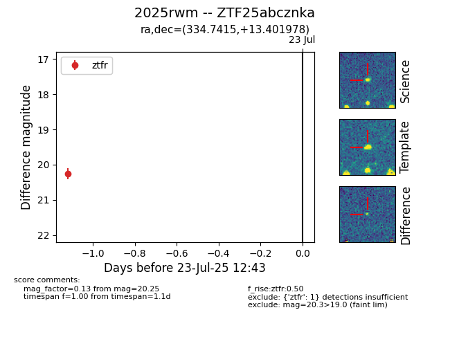

Target ZTF25abcznka at 2025-07-23 12:43, see:
FINK: fink-portal.org/ZTF25abcznka
Lasair: lasair-ztf.lsst.ac.uk/objects/ZTF25abcznka
ALeRCE: alerce.online/object/ZTF25abcznka
TNS: wis-tns.org/object/2025rwm
YSE: ziggy.ucolick.org/yse/transient_detail/2025rwm
alt names
ZTF25abcznka (ztf,fink)
2025rwm (tns,yse)
coordinates:
equatorial (ra, dec) = (334.7415,+13.40198)
galactic (l, b) = (75.6913,-35.13003)
photometry
last ztfr=20.25
1 ztfr detections
